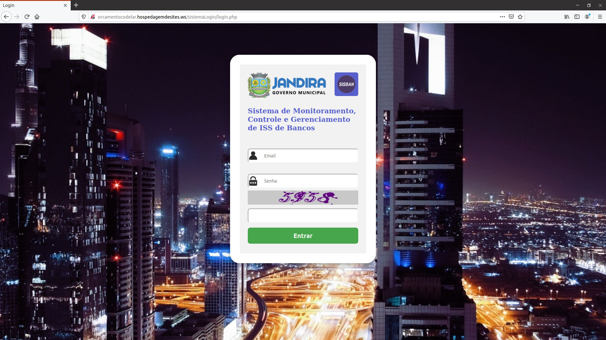
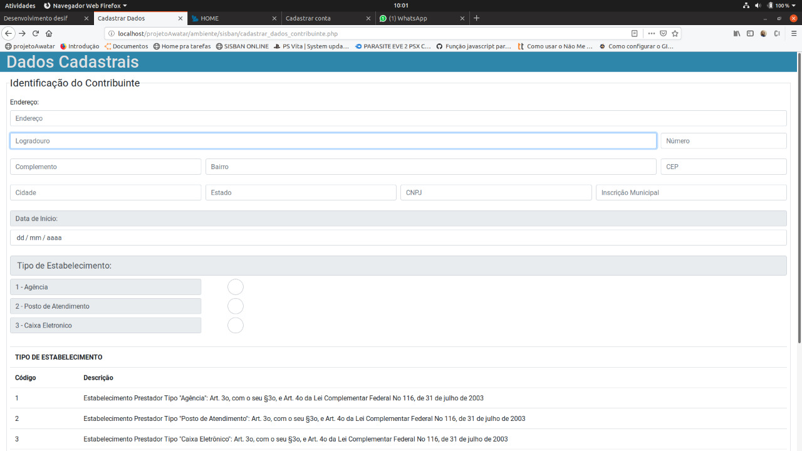
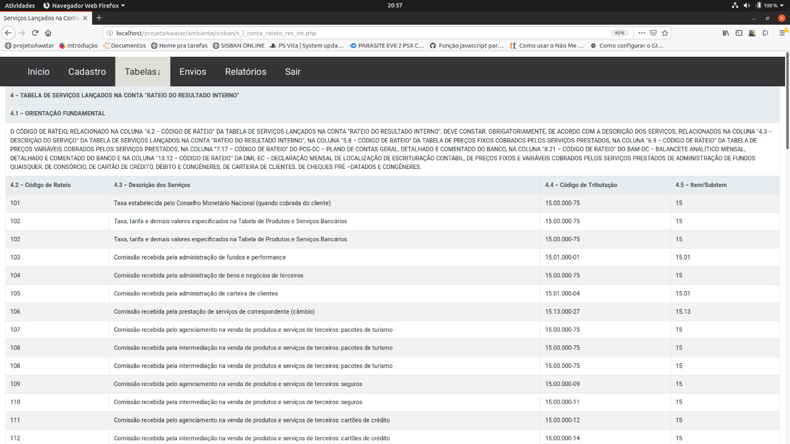

Sistema de Monitoramento, Controle e Gerenciamento de Iss de Bancos
Descrição do Projeto
Este sistema tem como alvo as prefeituras municipais para fins de cobrança de impostos das Instituições Financeiras, dentre as principais funcionalidades estão o cadastramento das contas e declaração mensal do Balancete Analítico Mensal dos contribuintes, também os servidores da prefeitura podem atuar na fiscalização das declarações dos contribuintes.
Tecnologias
O FrontEnd foi usado HTML5, CSS3, Bootstrao 4, Javascript.
O BackEnd foi usado PHP7 e mySql.
Minhas Responsabilidades neste produto
FrontEnd, BackEnd, banco de dados e deploy. Sistema de Login com diferente tipo de acesso(servidor/contribuinte), multiprefeitura se necessário, tabelas com códigos de tributação entre outras tabelas, menu com submenu, cadastramento de contas e envio de balancete através de importação de arquivo, modais, captcha, etc.